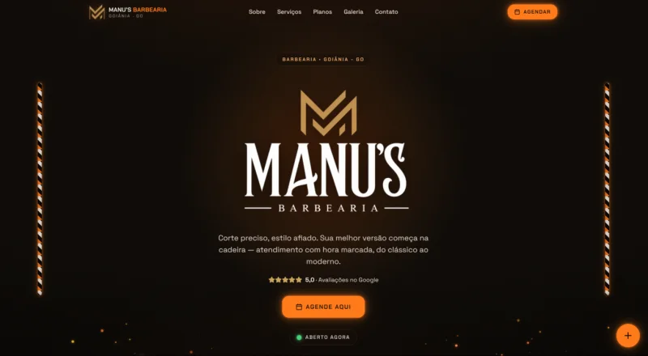
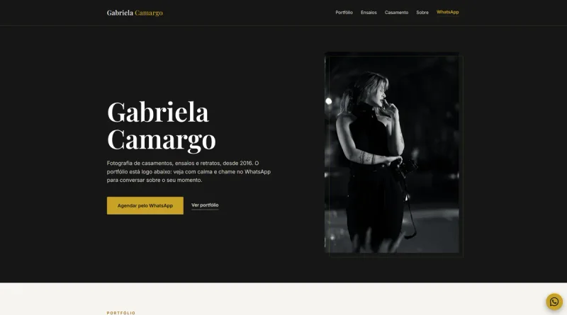
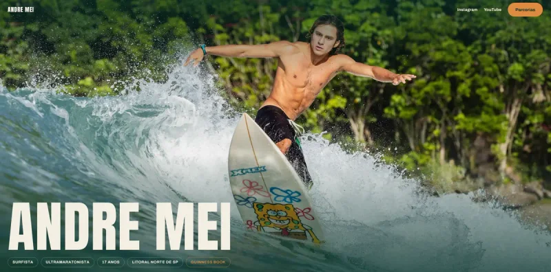
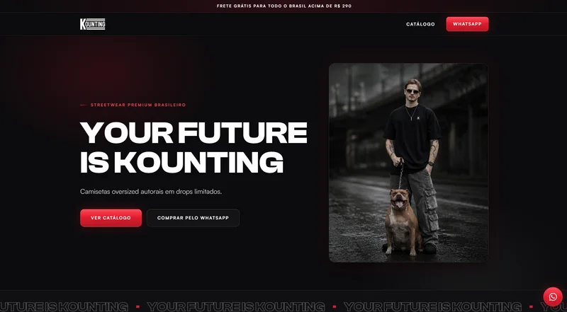
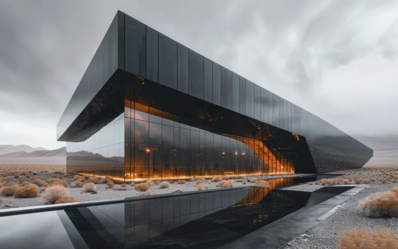
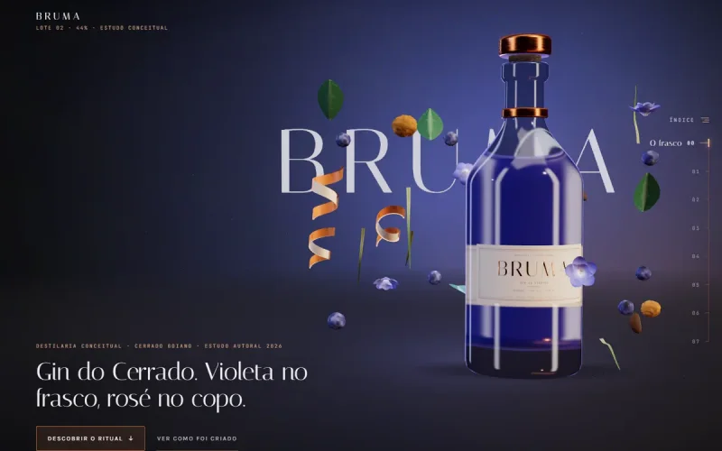
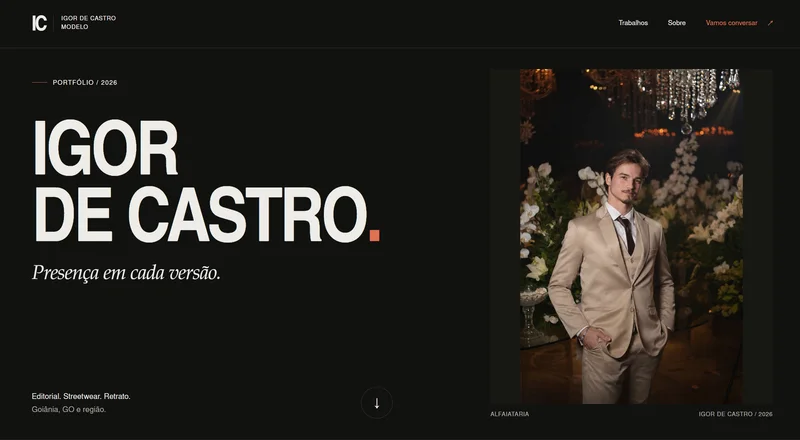

Explore meu trabalho
01 / CONEXÕESDo código para o mundo
06 / PROJETOSVeja os projetos funcionando. Dê o play ou explore cada site.

CLIENTE · FOTOGRAFIA
Gabriela Camargo
Um portfólio para ver, sentir e agendar.


MINHA MARCA · STREETWEAR
Kounting Streetwear
A marca que fundei. A vitrine que construí.

CONCEITO KYBER · ARQUITETURA
Casa Umbra
Uma experiência visual guiada pelo scroll.
Site para computador. No celular, veja o vídeo.

CONCEITO KYBER · 3D INTERATIVO
BRUMA
Uma marca fictícia. Uma experiência em 3D.
1 / 6 Deslize para explorar
Casa Umbra e BRUMA são estudos conceituais que desenvolvi para o portfólio da Kyber.
Feitas por mim. Grátis para você.
02 / FERRAMENTASAlém do código
03 / OUTRA PERSPECTIVA
Na frente da câmera.Editorial, streetwear e retrato.Meu portfólio de modelo ↗